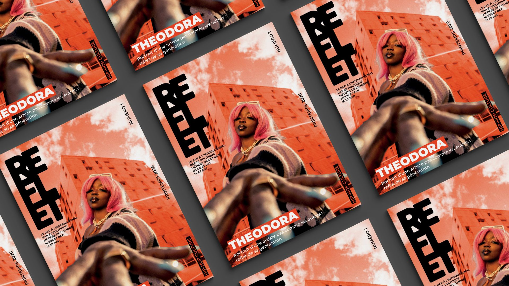
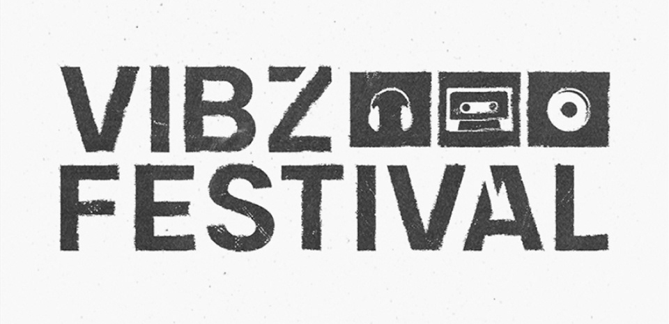

Sélection
Projets
Un portfolio, deux pratiques, design graphique et audiovisuel, portées par un même langage visuel. Filtre par discipline ou explore l'ensemble.





Sélection
Un portfolio, deux pratiques, design graphique et audiovisuel, portées par un même langage visuel. Filtre par discipline ou explore l'ensemble.

